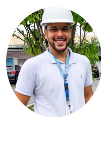

Minhas redes sociais
Quem sou eu?

Olá, meu nome é Wemenson Rogê, e sou apaixonado pela área da Engenharia Civil. Em 2022, concluí minha graduação em Engenharia Civil, um marco que solidificou meu compromisso com a construção de um mundo mais sustentável e resiliente. Hoje, tenho a honra de desempenhar um papel importante no Instituto do Meio Ambiente de Alagoas, onde combino minha formação em engenharia com uma pós-graduação em Gestão Ambiental, Auditoria e Licenciamento.
Minha trajetória profissional tem sido pautada pela busca constante pela harmonia entre o desenvolvimento urbano e a preservação ambiental
. Através da minha experiência no IMA/AL, tenho a oportunidade de aplicar meus conhecimentos em auditoria e licenciamento ambiental para garantir que projetos e empreendimentos sejam realizados de maneira responsável e sustentável, minimizando seu impacto no meio ambiente.
Acredito que a engenharia civil desempenha um papel fundamental na construção de um futuro melhor para as gerações futuras. Portanto, estou comprometido em continuar me aprimorando e colaborando ativamente na busca por soluções inovadoras que promovam o desenvolvimento econômico e social, sem comprometer a integridade do nosso planeta.
Tenho orgulho de ser um engenheiro civil dedicado à causa ambiental e estou ansioso para contribuir cada vez mais para a construção de um ambiente mais saudável e sustentável para todos. Se você compartilha dessa visão ou está interessado em parcerias no campo da engenharia civil e ambiental, ficarei muito feliz em trocar ideias e colaborar em projetos futuros. Juntos, podemos construir um mundo melhor.
Como entrar em contato
 @wroge_ - Me segue no Instagram!
@wroge_ - Me segue no Instagram!
 wroge34 - Me segue no GitHub!
wroge34 - Me segue no GitHub!
 Wemenson Rogê - Me segue no linkedin
Wemenson Rogê - Me segue no linkedin
 Clique aqui para baixar um dos meus projetos
Clique aqui para baixar um dos meus projetos